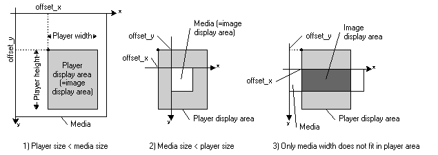

|
|||||||||
| PREV CLASS NEXT CLASS | FRAMES NO FRAMES | ||||||||
| SUMMARY: INNER | FIELD | CONSTR | METHOD | DETAIL: FIELD | CONSTR | METHOD | ||||||||
java.lang.Object
|
+--javax.microedition.lcdui.Displayable
|
+--javax.microedition.lcdui.Canvas
|
+--com.vodafone.v10.system.media.MediaPlayer
MediaPlayer is a subclass of the MIDP Displayable class, for playing visual or audio media data, or media resources such as music and visual content registered in the handset.
Here the term "media" is used as the general term for media data and media resources. An instance of the MediaPlayer class is here called a media player.
The general procedures for playing media are outlined below.
Create a MediaPlayer object.
Media is set in the media player. A Java application designates media for playing either 1) by indicating a media data byte array or URL, or 2) by designating a resource such as melody or video registered in the handset.
The size of the media as displayed on the screen is obtained. Then the display position on the screen is designated. If the media includes visual content, the Display object setCurrent() method is called to set the MediaPlayer object as "current displayable". The setCurrent() method does not need to be called if the media is sound only.
Preparations for playing are complete. The Java application can now use media player methods for playing, stopping, pausing and resuming play.
Events relating to media player playback can be monitored. This is done by setting up event listeners in the media player. Playback-related events include the start of play (PLAYED), pause (PAUSED), and stopped (STOPPED).
When use of a media player ends, the Display object setCurrent() method is set to a different Displayable object in order to display different screen contents.
A media player is created by a MediaPlayer constructor. Media data can be set in the player at the time of its creation. Setting of media data is possible by designating a byte array or URL. If no data is set at the time the player is created, designate null.
In addition to media data setting by the constructor, the MediaPlayer class
setMediaData()method can be used to set media. The media can be designated directly as a byte array or by a URL.A Java application programmer does not need to be concerned about the internal structure of media, other than to make allowance for the possibility that not all media data will be playable by MediaPlayer. When playback is not possible, an exception is thrown at the time the media is set.
Melody, visual content and other resources that have been registered in the handset can be designated for play by the media player.
For details see ResourceOperator.
After the media has been set in the MediaPlayer object, its size (width and height) can be obtained. Width is obtained by thegetMediaWidth()method and height by thegetMediaHeight()method. If the media is sound data only or otherwise contains no visual data, 0 is returned for both dimensions. In this case the media is not displayed on the screen when it is being played, and only audio is played back.
A media player occupies the entire display screen on the handset, except for the softkey area. The display screen width is obtained by the getWidth() method, and the height by the getHeight() method.
The media size may be larger or smaller than the display screen size. The
setContentPos()method is used to set the way in which the media is to be displayed on the screen. When this method is called, the x,y parameters designate the media display position on the handset screen, with the upper left corner of the media as origin. This is illustrated in Figure 1. The (x,y) in the figure are coordinates set by thesetContentPos()method.Figure 1. Designating the Media Display Area
If the media size is larger than the display screen, a rectangular portion of the media can be designated for display. In this case the x and y parameters designated with the
setContentPos()method are both positive values.If the media size is smaller than the display screen, the entire media display area needs to be positioned somewhere on the screen. The x and y parameters designated with the
setContentPos()method are in this case both negative values.If, say, the media width only is too large to fit inside the screen, a rectangular area inside the media is designated as the area to be displayed, as shown in the figure. In this case the x parameter with the
setContentPos()method is designated as a positive value and the y parameter as a negative value. A similar designation can be made when the media height only does not fit inside the screen.
If the display position is not designated with the
setContentPos()method, by default the upper left corner of the media aligns with the display screen upper left corner. (This is the same as designating x=y=0 with the (setContentPos()method.)The part of the screen where no media drawing takes place, as a result of position designation by the
setContentPos()method, is displayed as background with no media drawing. The background color in this case is dependent on the handset.
After media has been set in a MediaPlayer object, the media is ready to be played (Ready state). In this state, however, the media is not yet displayed to the user. For that purpose the Display object setCurrent() method is called to designate the MediaPlayer object as "current displayable".
When the MediaPlayer object play() method is called, playback starts. If there is visual data embedded in the media, it is displayed on the screen. Two versions of the play() method are provided,
play(boolean isRepeat)in which repetition (looping) can be designated, andplay()with no looping designation possible. If looping is designated, the media player plays the media repeatedly until it is stopped or paused. If the media is a still image, it will be played only once even if looping is designated.Stopping of playback is done by the
stop()method, and pausing by thepause()method.The display position can be changed even during playback, by calling the
setContentPos()method.When use of the media player ends, the display screen contents are changed by calling the Display object setCurrent() method and designating a different Displayable object.
While a media player is playing media, play can be paused by calling the
pause()method. It can then be resumed by calling theresume()method.A paused media player can be stopped by calling the
stop()method.
Notes:
For monitoring of events such as play, pause, resume and stop, implement the MediaPlayerListener interface and enable the occurrence of such events to be confirmed. For example, when the play() method is called, notification of MediaPlayerListener.PLAYED is confirmed. Unless that confirmation is made, the expected operation may not result. If, for example, the pause() method is called before MediaPlayerListener.PLAYED is notifed, it will be ignored.
While a media player is set to "current displayable" by the Display object setCurrent() method, drawing other than of the media player is not possible.
If the media is audio only, it is not necessary to set the media player to "current displayable". In this case a different screen display can be made while the media is playing. Setting the media player to "current displayable" for audio-only media will result in only the background color being displayed on the screen.
If the play(), stop(), or resume() method is called for a media player that is not set to "current displayable," an IllegalStateException exception will be thrown. No exception is thrown, however, if the media is audio only.
Do not set another Displayable object to "current displayable" while a media player containing media with visual content is playing. If this is done, the functioning of the media player cannot be guaranteed. To display a different Displayable object, first pause the media player and confirm notification of the corresponding event. After pausing the player, setting a different Displayable object to "current displayable" and displaying it, the media player can again be set to "current displayable" and play resumed.
It is possible to alternate playing by multiple media players in this way. That is, the currently playing player is paused, the corresponding event is confirmed, then a different media player is designated as "current displayable" and played.
While it is not necessary to set an audio-only media player to "current displayable," it is also not possible to start playing another media player while the audio-only media player is playing. Instead, first pause the playing media player, confirm the corresponding event, then perform the processing for playing the other media player. To resume the first media player, the other media player must be paused or stopped first.
An IllegalStateException will be thrown if the media is reset during PLAYING, PAUSED, or ERROR state. Set media only while play is stopped.
If media that includes audio is playing while a resident Java application is running, the media player is stopped each time an incoming voice call, SMS arrival, or schedule alarm occurs, and the MediaPlayerListener mediaStateChanged() is called. Then the mobile device notifies the user of the event. An exception is thrown if media player control is attempted while this notification is being made.
To avoid this, implement the RingStateListener methods, and do not perform media player control during the interval after ringStarted() is called until ringStopped() is called.
MediaPlayerListener is an interface for implementing listeners to monitor events issuing from a media player. A listener implementing MediaPlayerListener is used by setting it in a media player using the MediaPlayer class setMediaPlayerListener() method. When an event occurs while a listener is set, the listener mediaStateChanged() method is called and the event type is notified.
5. State Transition
The media player state transitions are shown in Figure 2. The state values NO_DATA, READY, PLAYING, and PAUSED indicated in this figure are the values obtained when getState() is called in each state.
Figure 2. Media Player State Transitions
When a MediaPlayer instance is created without designating the media data to be played, the state is NO_DATA state.
When media is set in a media player, the state goes to READY state. This is also the state when media data is designated at the time the MediaPlayer instance is created.
When a media player is in READY state, media can be played on it. Starting media playback causes the media player to go to PLAYING state. At this time "PLAYED" is notified in the MediaPlayerListener mediaStateChanged() method.
While a media player is in PLAYING state, media playback can be paused. Pausing playback causes the media player state to go to PAUSED state. At this time "PAUSED" is notified in the MediaPlayerListener mediaStateChanged() method.
While a media player is in PAUSED state, media playback can be resumed. Resuming playback causes the media player state to return to PLAYING state. At this time "PLAYED" is notified in the MediaPlayerListener mediaStateChanged() method.
When the media player state is PLAYING or PAUSED, and either all the media data finishes playing or a stop instruction is received, media playback stops. The media player goes to READY state, and media playback is possible. At this time "STOPPED" is notified in the MediaPlayerListener mediaStateChanged() method.
When the media player is no longer needed, it can be deleted while in NO_DATA or READY state.
If an error occurs while a media player is playing, the playback is stopped and the state goes to ERROR state.
Stopping a media player in ERROR state by calling the stop() method changes the state to READY state.
| Field Summary | |
static int |
ERROR
Error (stopped): Value obtained by getState() |
static int |
NO_DATA
No data: Value obtained by getState() |
static int |
PAUSED
Paused: Value obtained by getState() |
static int |
PLAYING
Playing: Value obtained by getState() |
static int |
READY
Ready: Value obtained by getState() |
| Fields inherited from class javax.microedition.lcdui.Canvas |
DOWN, FIRE, GAME_A, GAME_B, GAME_C, GAME_D, KEY_NUM0, KEY_NUM1, KEY_NUM2, KEY_NUM3, KEY_NUM4, KEY_NUM5, KEY_NUM6, KEY_NUM7, KEY_NUM8, KEY_NUM9, KEY_POUND, KEY_STAR, LEFT, RIGHT, UP |
| Constructor Summary | |
MediaPlayer(byte[] data)
MediaPlayer constructor |
|
MediaPlayer(java.lang.String url)
MediaPlayer constructor |
|
| Method Summary | |
int |
getHeight()
Gets the media player display height. |
int |
getMediaHeight()
Gets the media height |
int |
getMediaWidth()
Gets the media width. |
int |
getState()
Gets the player state. |
int |
getWidth()
Gets the media player display width. |
protected void |
hideNotify()
Called when display of the media player on the screen ends. |
protected void |
paint(javax.microedition.lcdui.Graphics g)
Draws. |
void |
pause()
Paused playing. |
void |
play()
Plays media. |
void |
play(boolean isRepeat)
Plays media. |
void |
resume()
Resumes playing. |
void |
setContentPos(int x,
int y)
Sets the media player display position in relation to the upper left corner of the media as origin. |
void |
setMediaData(byte[] data)
Sets media data. |
void |
setMediaData(java.lang.String url)
Sets media data. |
void |
setMediaPlayerListener(MediaPlayerListener listener)
Registers a media player listener. |
protected void |
showNotify()
Called when the screen switches to media player display. |
void |
stop()
Stops playing. |
| Methods inherited from class javax.microedition.lcdui.Canvas |
getGameAction, getKeyCode, getKeyName, hasPointerEvents, hasPointerMotionEvents, hasRepeatEvents, isDoubleBuffered, keyPressed, keyReleased, keyRepeated, pointerDragged, pointerPressed, pointerReleased, repaint, repaint, serviceRepaints |
| Methods inherited from class javax.microedition.lcdui.Displayable |
addCommand, isShown, removeCommand, setCommandListener |
| Methods inherited from class java.lang.Object |
equals, getClass, hashCode, notify, notifyAll, toString, wait, wait, wait |
| Field Detail |
public static final int NO_DATA
public static final int READY
public static final int PLAYING
public static final int PAUSED
public static final int ERROR
| Constructor Detail |
public MediaPlayer(byte[] data)
data - Designates media data.RuntimeException - if creation failed.
public MediaPlayer(java.lang.String url)
throws java.io.IOException
url - URL indicating the media data locationRuntimeException - if creation failed.| Method Detail |
public void setMediaData(byte[] data)
data - media dataIllegalStateException - if this method is called in Playing or Paused state.NullPointerException - if data is null.
public void setMediaData(java.lang.String url)
throws java.io.IOException
url - URL indicating the media data locationIllegalStateException - if this method is called in Playing or Paused state.IllegalArgumentException - if the URL is illegal.NullPointerException - if url is null.java.io.IOException - if data read failed, etc.public int getState()
RuntimeException - if the native player did not operate properly.public int getMediaWidth()
Gets the media width.
Gets the width of visual content media. If the media contains no visual content, 0 is returned.
public int getMediaHeight()
Gets the media height
Gets the height of visual content media. If the media contains no visual content, 0 is returned.
public int getWidth()
Gets the media player display width.
getWidth in class javax.microedition.lcdui.Canvaspublic int getHeight()
getHeight in class javax.microedition.lcdui.Canvas
public void setContentPos(int x,
int y)
Sets the media player display position in relation to the upper left corner of the media as origin.
If a negative value is set, the media upper left corner will be shown inside the media player display display.
x - Upper left corner x coordinatey - Upper left corner y coordinatepublic void play()
IllegalStateException - if video playback is requested for a media
player not set to "current displayable".RuntimeException - if the native player did not operate properly.NullPointerException - if no media data is set.public void play(boolean isRepeat)
isRepeat - true: Automatic looping (no looping if a still image)IllegalStateException - if video playback is requested for a media
player not set to "current displayable".RuntimeException - if the native player did not operate properly.NullPointerException - if no media data is set.public void stop()
Stops playing.
The next time the media data is played after being stopped, it starts from the beginning.
IllegalStateException - if stopping of video playback is requested for
a media player not set to "current displayable".RuntimeException - if the native player did not operate properly.NullPointerException - if no media data is set.public void pause()
IllegalStateException - if pausing of video playback is requested for
a media player not set to "current displayable".RuntimeException - if the native player did not operate properly.NullPointerException - if no media data is set.public void resume()
Resumes playing.
Play resumes from the point at which it was paused.
IllegalStateException - if resumption of video playback is requested
for a media player not set to "current displayable".RuntimeException - if the native player did not operate properly.NullPointerException - if no media data is set.public void setMediaPlayerListener(MediaPlayerListener listener)
protected void paint(javax.microedition.lcdui.Graphics g)
Draws.
Since a player that is playing back media including visual content draws the media on the screen continuously, overriding this method to perform some kind of drawing may cause the screen to flicker.
paint in class javax.microedition.lcdui.Canvasg - The Graphics instance to be used for the drawingprotected void showNotify()
showNotify in class javax.microedition.lcdui.Canvasprotected void hideNotify()
hideNotify in class javax.microedition.lcdui.Canvas
|
|||||||||
| PREV CLASS NEXT CLASS | FRAMES NO FRAMES | ||||||||
| SUMMARY: INNER | FIELD | CONSTR | METHOD | DETAIL: FIELD | CONSTR | METHOD | ||||||||